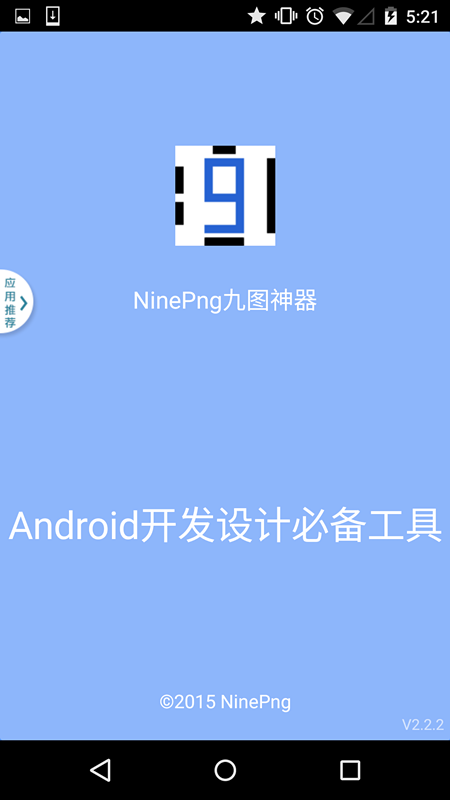
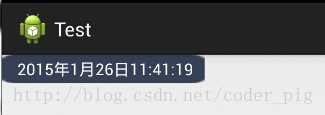
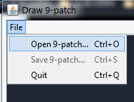
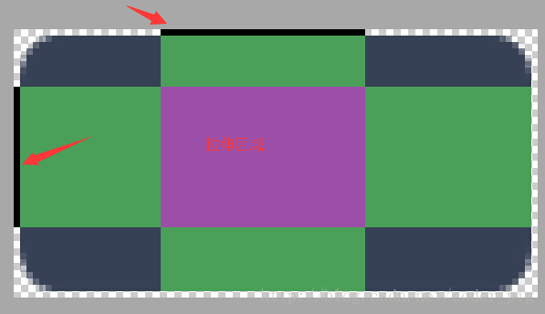
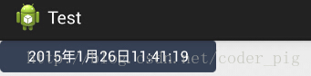
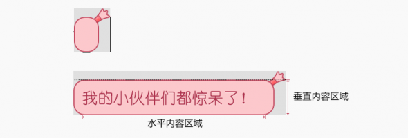
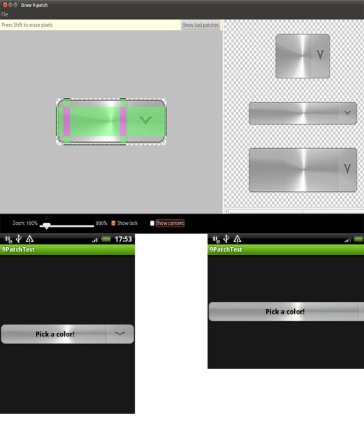
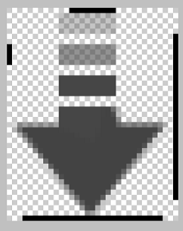

1. 本節の導入：
皆さんが抱くかもしれない疑問：
1. .9画像とは何ですか？
答え：画像の拡張子の前に.9が付く画像のことです。例えば、pic1.9.pngのような画像です。2. .9画像は何ができますか？答え：画像を引き伸ばす際、特定の領域では画像が歪みません。そして、歪まない領域は自分で描くことができます。3. .9画像は何を使って作るのですか？答え：良い仕事をしようと思うなら、まず道具を整えなければなりません。.9画像を作るツールは以下の通りです：
①Android SDKに付属：draw9patch.bat、ただしこれはかなり前からあるのに、Googleは一度も更新していないようです...
②NinePatchEditor、標準のものに比べて、いくつかの最適化が行われ、バッチ操作に対応し、インターフェースも少し見栄えが良くなっています。 興味があればダウンロードしてみてください。筆者は普段これを使っています。ダウンロードリンク：NinePatchEditor.zip
③NinePng九枚神器、スマホ版の.9処理ツールで、出来はかなり良いです。ただし、WiFiに接続して画像を相互転送する必要があり、実際に操作するのは少し面倒です。機能は比較的強力なので、興味があれば関連アプリストアで検索してダウンロードしてください：

④PhotoShop、これはさすがに大げさです。通常.9画像を作るのにこれを使うのはデザイナーです。興味があれば関連チュートリアルを検索してみてください！

2. .9画像の作り方は？
！！核心ポイント：左上はストレッチ、右下はコンテンツ！！！！！！実は核心は上記の内容だけです！まずは画像を用意して試してみましょう！
1. draw9patch.batで.9画像を作成する例：
このような画像があります：、TextViewのandroid:blackgroundに設定することで、TextViewの背景にすることができます。コンテンツが少ないうちは正常ですが、多くなると次のような状況が発生する可能性があります：画像が引き伸ばされて変形してしまうことがわかります。明らかにこれは私たちのニーズに合いません。そこで、この画像を処理して、角丸部分は長さに応じて引き伸ばされず、中央部分だけが引き伸ばされるようにする必要があります。

draw9patch.batを開き、左上のFileをクリックして、該当するディレクトリに移動し、処理したい画像素材を開きます。次に、ツールのメインインターフェースが表示されます：

右側のプレビュー領域は、それぞれ縦方向のストレッチ、横方向のストレッチ、縦横両方のストレッチのプレビューです。

では、次に画像の処理を始めます：
Step 1.ZoomとPatch scaleを調整しましょう：自分に合った拡大率を設定し、show patchにチェックを入れます。後で「ゼブラ線」を処理する必要があるため、Zoomは十分に大きくしておくと良いでしょう。
Step 2.次に、「ゼブラ線」の上で操作するだけでOKです。PS：黒い線はドットを1つずつ打って描かれています。ドットを消したい場合は、Shiftを押しながらクリックしてください！

Step 3.画像を保存します。末尾が.9.pngになるようにします。例えば、ここで保存するファイル名はback.9.pngです。；へへ、それをプロジェクトに追加して、TextViewの背景に設定します：

効果は抜群です。これで、表示する文字がどれだけ長くても、結果は図のようになります。新スキルGET！

2. 他の人が.9画像をどう作っているのか見てみましょう：
状況に応じて、異なる.9画像を作る必要があるかもしれません。以下では、他の人が作った少し複雑な.9画像の例を見てみましょう。例：
1. 原文リンク：http://www.miued.com/2074/まあ、この素材は好きだけど、残念ながら手に入らないんだよねQAQ！

2. 原文リンク：http://blog.csdn.net/lizzy115/article/details/7950959

3. 原文リンク：http://www.cnblogs.com/vanezkw/archive/2012/07/19/2599092.html

3. 本節のまとめ：
では、本節の.9画像（ストレッチ可能な画像）の作り方に関するチュートリアルはここまでです。比較的簡単ですね。私たちの合言葉を覚えておいてください：左上はストレッチ、右下はコンテンツ！.9画像をいくつか作れば、きっと実感できるはずです。それでは〜
クリックしてノートを共有
<p style="font-size:14px;">ノートは本記事の内容を拡張したものである必要があります！</p><br> <p style="font-size:12px;"><a href="../tougao.html" target="_blank">記事投稿はこちらをクリック</a></p> <p style="font-size:14px;"><a href="./runoob-user-test-intro.html" target="_blank">登録招待コードの取得方法</a></p> <h3 class="text-muted"><i class="fa fa-info-circle" aria-hidden="true"></i> ノートを共有する前に<a href=".." class="runoob-pop">ログイン</a>が必要です！</h3> <p><a href="./runoob-user-test-intro.html" target="_blank">登録招待コードの取得方法</a></p>